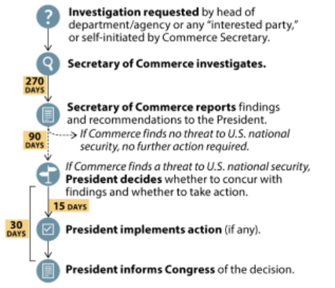

Traffic through Hormuz will fall as shaky peace collapses. Following repeated Iranian attacks on ships, US President Donald Trump announced that the US would resume its blockade on Iran, bringing an effective close to the shaky peace that EG had expected would continue to the end of the year.
Rapid de-escalation appears unlikely, given how both sides have committed to their positions, and depressed Strait of Hormuz traffic is likely to endure through July. EG expects traffic to fall from 30-50% of prewar flows to 5-15% until both sides de-escalate.
The US will maintain its blockade and respond to Iranian attacks on ships, but is unlikely to escalate further. to. As Trump confirmed this morning, the US was never likely to follow through on threats to impose a toll on non-Iranian traffic moving through the strait. Iran is unlikely to back down; it will continue its attacks on ships while maintaining heavy pressure on Oman and the rest of the Gulf states to accede to its demands for permanent influence in the strait.
Trump is likely more comfortable with the breakdown of the shaky peace than many might appreciate. The US has enough cushion on stockpiles of refined crude products to avoid shortages or unsustainable price spikes in the US, and on the Strategic Petroleum Reserve to continue drawdowns for at least several more weeks. With the midterms not a source of political pressure, Trump can live with a scenario in which the strait remains closed or at least significantly restricted through the middle of August.
For more, please see Iran, MENA Crisis: Traffic through Hormuz will fall as shaky peace collapses, 13 July 2026.
ICE returning to the headlines is a risk for Republicans. Two fatal shootings by Immigration and Customs Enforcement officers—in Texas last week and Maine yesterday—raise the prospect that the Trump administration’s deportation operations will become a major national news story for the first time since the climbdown in Minnesota earlier this year.
If the story catches on nationally, it would likely be bad news for Republicans: ICE polls poorly among the general public, and the January surge in Minneapolis—which also involved fatal shootings—coincided with a slight decline in Trump’s approval rating. A March YouGov poll fond that 67% of independents have either a little or no confidence “at all” in ICE.
That one of the shootings happened in Maine, home to a competitive Senate race this year, could accentuate its impact; Senator Susan Collins (R-ME) has not yet commented on the shooting, but will likely seek to distance herself from the administration on it.
The shootings are unlikely to affect the Department of Homeland Security’s recent deportation surge under Secretary Markwayne Mullin, which reportedly involved 2,000 arrests per day at the end of June. The bar to backtracking on the deportation agenda is demonstrably very high and would likely involve substantial pushback from within the Republican Party, which has not materialized in relation to the two most recent shootings.
Trump will widen and soften anti-Huawei telecom strategy. To preserve stability in the bilateral relationship with China, the US is unlikely to resume the first Trump administration’s pressure campaign to convince countries to ban Huawei and ZTE equipment.
Instead, for 5G and 6G rollouts, the US is likely to highlight untrusted provider risk. US government officials will encourage countries to phase out untrusted vendors as they naturally upgrade their telecommunications infrastructure.
The anti-Huawei strategy will likely extend to other countries and telecoms technologies even as it remains light-touch. Outside Europe and the Indo-Pacific, the US has a smaller footprint and less exposure to risk, and therefore less incentive to push for a ban; the US will instead rely on different tools, especially trade agreements, to advance its agenda.
Polysilicon and drones near statutory deadlines for potential Section 232 actions. The Commerce Department likely submitted reports on both polysilicon and drones to the White House in late March, meaning the subsequent statutory 90-day period for presidential action is nearing its end. The administration’s response could take the form of tariffs or negotiated arrangements with trading partners, as seen recently in the Section 232 aircraft and critical minerals cases.
Trump continues to show flexibility on Section 232 outcomes, favoring negotiations over immediate tariffs in select sectors. Consistent with Section 122 and planned Section 301 exclusions for aircraft and aircraft parts, President Trump directed Commerce and USTR to negotiate with trading partners rather than imposing any immediate tariffs.
Trump is not adhering strictly to Section 232 statutory deadlines, meaning the timeline on action could be pushed out. While imposing tariffs after the statutory deadlines carries litigation risks, the administration is prioritizing policy flexibility and keeping the threat of tariffs alive over procedural deadlines.

Quote of the Day
"New York will lead the way in creating the strongest standards in the nation for data center development, ensuring that when companies succeed because of New York, New Yorkers succeed too.” – New York Governor Kathy Hochul in announcing she will sign an executive order implementing the country’s first state-wide pause on large data-center development. Hochul’s order, which is less restrictive than a similar ban which passed the state legislature in June and is awaiting her signature, is a notable step in the policy environment on data centers and could preview similar actions in Democratic-led states around the country.
On the Radar
14 July: Fed chair Kevin Warsh testifies before the House Financial Services Committee.
15 July: Senate Judiciary Committee confirmation hearing for Attorney General nominee Todd Blanche
15 July: Senate Select Committee on Intelligence confirmation hearing for Director of National Intelligence nominee Jay Clayton
16 July: Senate Committee on Health, Education, Labor and Pensions holds confirmation hearing for Secretary of Labor nominee Keith Sonderling.
24 July: Section 122 tariffs expire
27 July: Deadline for Maine Democratic Party to name Senate candidate
4 August: Michigan primary election
3 November: National midterm elections